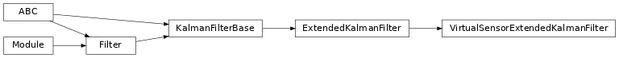

torchfilter.filters._virtual_sensor_filters¶
Private module; avoid importing from directly.
Module Contents¶
Classes¶
EKF variant with a virtual sensor model for mapping raw observations to predicted |
|
UKF variant with a virtual sensor model for mapping raw observations to predicted |
|
Square root UKF variant with a virtual sensor model for mapping raw observations |
-
class
torchfilter.filters._virtual_sensor_filters.VirtualSensorExtendedKalmanFilter(*, dynamics_model: DynamicsModel, virtual_sensor_model: VirtualSensorModel)[source]¶ Bases:
torchfilter.filters,torchfilter.filters.ExtendedKalmanFilterEKF variant with a virtual sensor model for mapping raw observations to predicted states.
Assumes measurement model is identity.
-
class
torchfilter.filters._virtual_sensor_filters.VirtualSensorUnscentedKalmanFilter(*, dynamics_model: DynamicsModel, virtual_sensor_model: VirtualSensorModel, sigma_point_strategy: Optional[utils.SigmaPointStrategy] = None)[source]¶ Bases:
torchfilter.filters,torchfilter.filters.UnscentedKalmanFilter
UKF variant with a virtual sensor model for mapping raw observations to predicted states.
Assumes measurement model is identity.
-
class
torchfilter.filters._virtual_sensor_filters.VirtualSensorSquareRootUnscentedKalmanFilter(*, dynamics_model: DynamicsModel, virtual_sensor_model: VirtualSensorModel, sigma_point_strategy: Optional[utils.SigmaPointStrategy] = None)[source]¶ Bases:
torchfilter.filters,torchfilter.filters.SquareRootUnscentedKalmanFilter
Square root UKF variant with a virtual sensor model for mapping raw observations to predicted states.
Assumes measurement model is identity.